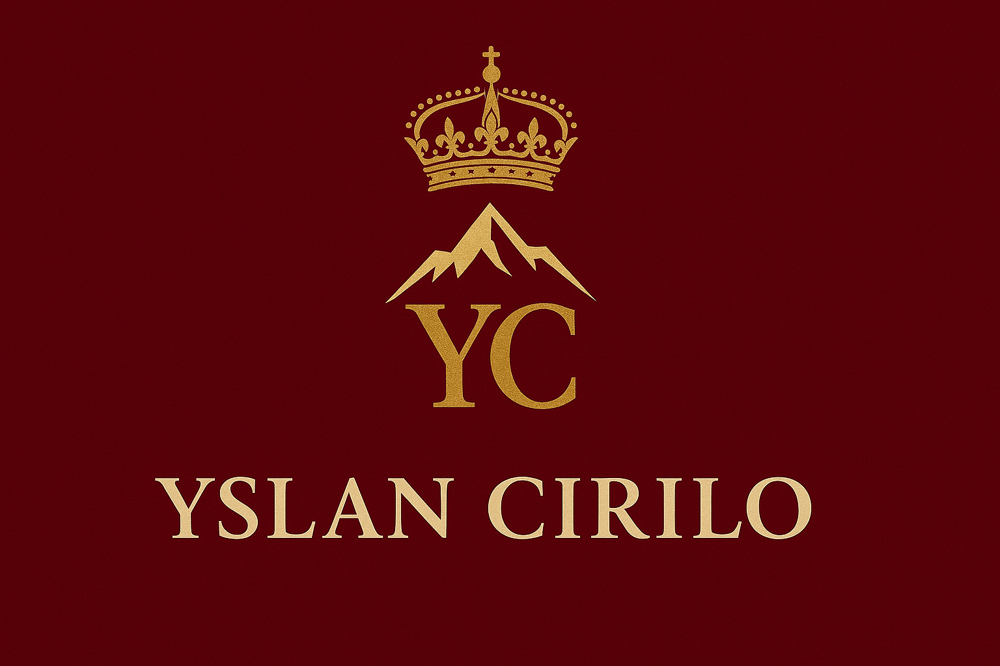

Sobre Nós

Quem Somos
Yslan Cirilo
Uma Obra-Prima Atemporal
Fundada em 1700 no coração da Suíça, durante os dias dourados dos impérios europeus, Yslan Cirilo
nasceu não apenas como uma marca, mas como um legado entrelaçado à própria história da nobreza. Concebida para
vestir reis, rainhas e a mais alta aristocracia, sua essência sempre foi forjada nos princípios da excelência
absoluta, da arte têxtil refinada e de uma visão que transcende o tempo.
Cada fio, cada corte e cada detalhe carrega mais de três séculos de perfeição silenciosa, onde o luxo nunca foi
gritado, mas sussurrado nos salões de palácios e nos corredores das grandes cortes. Desde suas primeiras peças,
tecidas à mão por artesãos que dedicavam suas vidas a uma única veste, até os dias de hoje, Yslan Cirilo
manteve-se fiel à sua origem: criar não apenas roupas, mas obras de arte que vestem almas raras.
A marca evoluiu sem jamais se curvar às modas passageiras. Ela permaneceu como um farol de elegância atemporal,
preferida por aqueles que compreendem que o verdadeiro luxo não reside no efêmero, mas no eterno. Vestir Yslan
Cirilo é carregar nos ombros séculos de história, é pertencer a uma linhagem invisível que une passado, presente e
futuro.
Hoje, ao traçar estas palavras pela última vez após 55 anos a serviço das maior casa de moda do
mundo, eu, um humilde guardião da beleza, afirmo com convicção:
Yslan Cirilo não é apenas uma marca. Ela é um símbolo. Um testamento vivo do que a moda pode ser quando guiada
não pela pressa, mas pela eternidade.
“Se outras marcas escrevem capítulos, Yslan Cirilo escreve lendas.”
Aurelius Cirilo EX-CEO da Yslan Cirilo
1970-2025
Nosso Manifesto
Yslan Cirilo não cria moda, cria legado.
Desde 1700, quando o fio e a agulha desenhavam sonhos para reis e rainhas
nos vales suíços, nossa essência permanece intacta: vestir não corpos, mas histórias.
Para nós, cada costura carrega um segredo ancestral. Cada tecido conta uma narrativa de poder, sofisticação e rareza.
Nossos mestres artesãos dedicam vidas inteiras a lapidar não apenas peças de vestuário, mas relíquias de um tempo em que vestir-se era um ritual sagrado.
Ser Yslan Cirilo é transcender gerações. É desfilar não apenas por salões, mas pelas páginas da eternidade.
O efêmero passa. O eterno veste-se de Yslan Cirilo.


.png)